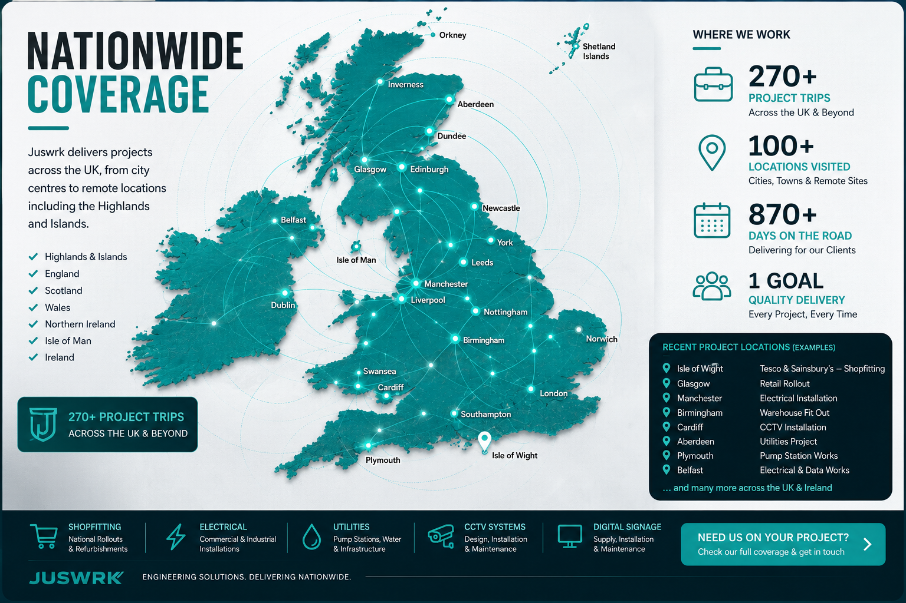

Nationwide project delivery
From the Highlands
to the Isle of Wight.
National rollout experience across retail, electrical, wastewater, CCTV and specialist engineering — from city centres to remote sites and islands.
EnglandScotlandWalesNorthern IrelandHighlands & IslandsIsle of Wight
270+Project trips
100+Locations visited
870+Days on the road
UK-wideOperational coverage
Where we work
Coverage you can actually see.
The current map is an illustrative view of the geographical spread reflected in the project history. We can replace the indicative points with the full Timeline export when available.

270+ project trips · national rollout capability
Reach without losing focus
National programmes. Local site delivery.
Coverage isn't about colouring a map. It is the ability to mobilise, get onto site, understand the work and deliver consistently across different locations and operating environments.
North & ScotlandGlasgow, Edinburgh, Aberdeen, Inverness and remote project locations.
Midlands & North WestManchester, Liverpool, Leeds, Birmingham and surrounding regions.
South & South WestLondon, Southampton, Plymouth and wider national rollout routes.
Islands & Remote SitesHighlands, islands and Isle of Wight project delivery.
Different sites. Same standard.
Coverage across the work, not just the map.
 Wastewater & Pumping
Wastewater & Pumping Electrical
Electrical Telemetry & Controls
Telemetry & Controls National Retail Rollouts
National Retail Rollouts CCTV & Systems
CCTV & SystemsYour next location
Put a pin on the map.
Send the site location, scope and programme dates and we'll start there.